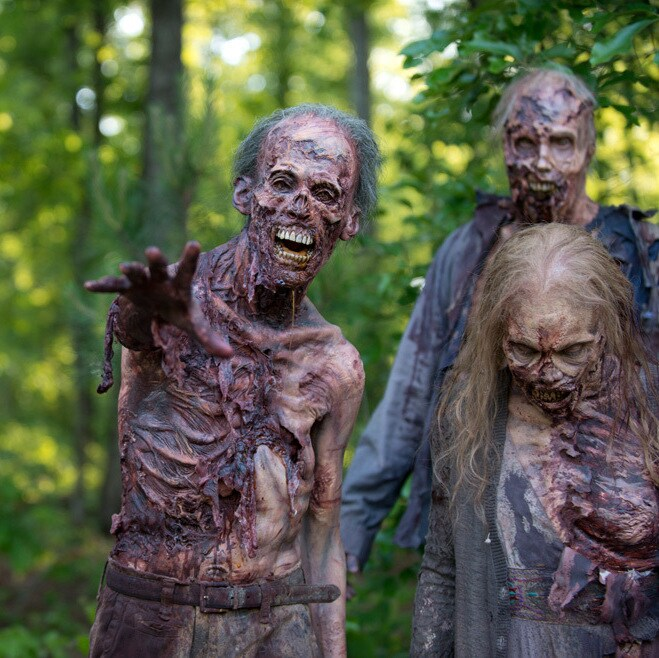
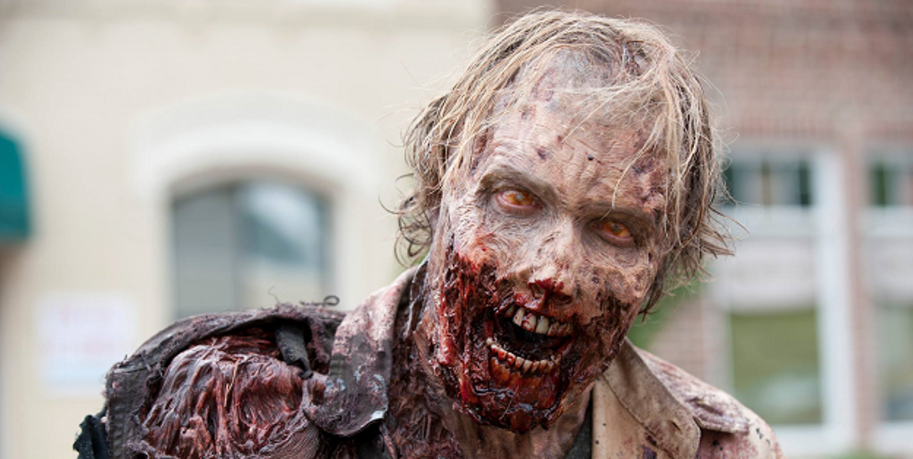
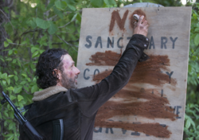
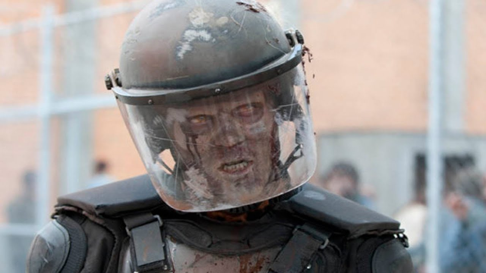
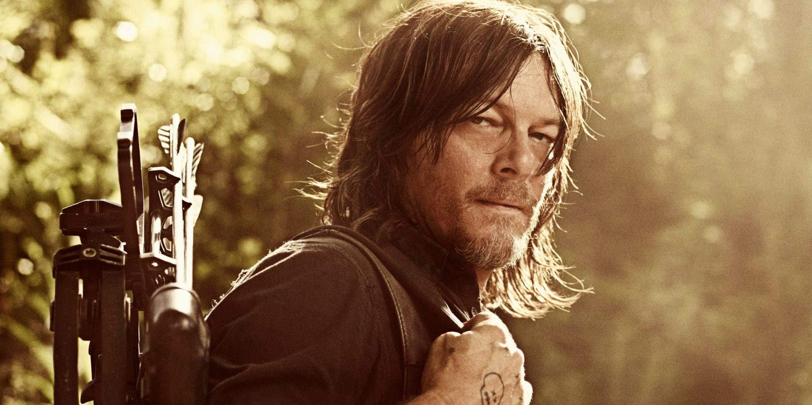
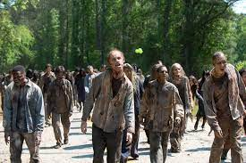
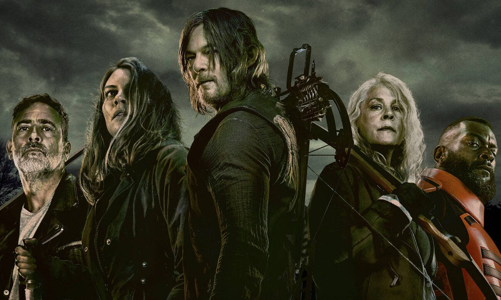

Curiosadades Sobre The Walking Dead
Nada de usar a palavra “zumbi”
|
É uma regra não escrita dentro da produção da série, e também das HQs, não usar a palavra zumbi. Para isso, nos episódios é feita a utilização de termos como caminhantes, mortos-vivos, mortos, podres e outros para se referir aos monstros. Nas HQs o autor Robert Kirkman faz uso do termo de vez em quando, mas de maneira errônea. Isto porque, segundo o próprio, a palavra “zumbi” não existe no universo da série, pois este tipo de criatura não faz parte na ficção daquele mundo alternativo. |
 |
Como fazem os zumbis não piscar na série
|  |
Ao contrário de quem está vivo, os zumbis não piscam. Mas os atores sim. Então, para remover as piscadelas ocasionais que os zumbis dão em câmera, são feitas a utilização de técnicas de tratamento digital e CGI. Assim, a horda de criaturas fica muito mais amedrontadora e estranha para quem assiste. |
Episódio mais assistido
| O episódio mais assistido de The Walking Dead nos Estados Unidos foi a estreia da quinta temporada. O episódio “No Sanctuary” – “Nenhum Santuário” no Brasil – teve sua exibição no dia 12 de outubro de 2014 e alcançou a marca de 17,3 milhões de espectadores simultâneos. |
 |
Atirador no set? Chamem a SWAT!
|  |
Durante as gravações da primeira temporada da série, a SWAT, polícia estadunidense especializada, foi chamada para um dos atores. Michael Rooker interpretava Merle Dixon e estava posicionado sobre um telhado com uma arma em mãos. Alguns vizinhos confundiram o ator com um atirador de verdade. Sem saber que não passava de gravações para a série, foram e chamaram a polícia. Felizmente ninguém foi preso e tudo foi resolvido como o mau entendido que era. Porém, ainda assim uma unidade da SWAT armada e pronta para a ação foi deslocada para o bairro onde as gravações eram feitas. |
Mordido por um fã
|
Acredite ou não, fãs da série já morderam os atores na vida real. O primeiro caso foi com o ator Norman Reedus, queridinho de todos graças à atuação como Daryl, um dos personagens mais populares da obra. Isto aconteceu durante uma Walker Stalker Con, evento da obra nos Estados Unidos. Segundo Norman, a fã em questão tirou fotos com ele normalmente. No entanto, de repente ela começou a agir estranhamente, uivou com se tivesse se transformado em lobisomem e o mordeu antes de uivar novamente! Muito estranho, com certeza. O ator disse em entrevistas que não faz ideia do que aconteceu. Provavelmente muita emoção provocou a mulher a agir estranhamente. O ator não levantou queixas, mas a moça foi banida do evento |
 |
Existem mais zumbis que humano no mundo de The Walking Dead
|  |
Com o avanço da doença e cada vez mais pessoas morrendo, era de se esperar que, em algum momento, haveria mais mortos caminhantes do que humanos vivos. Este fato foi confirmadooficialmente na revista em quadrinhos de The Walking Dead. Segundo a obra o número de zumbis para humanos é de impressionantes 5000 para 1! Não à toa, apenas os mais fortes sobrevivem. |
Personagens favoritos do público
| Segundo o site Ranker os personagens favoritos dos fãs de The Walking Dead são Daryl Dixon (Norman Reedus), Glenn Rhee (Steven Yeun), Michonne (Danai Gurira), Rick Grimes (Andrew Lincoln) e Hershel Greene (Scott Wilson). |
 |